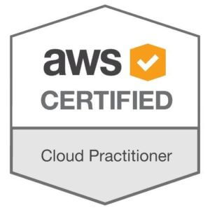

お知らせ
◆2019/05/04 SOAの問題集の追加◆2019/05/12 CLFの問題集の追加
◆2019/05/18 CLFの問題集の追加
◆2019/05/19 SOAの問題集の追加
◆2019/05/20 SAA01,02,03,04,06,07の問題ブラッシュアップおよび変更
◆2019/05/21 SAA08の問題ブラッシュアップおよび変更
◆2019/05/22 SAA09,10の問題ブラッシュアップおよび変更
◆2019/05/25 SAA11,12,13の問題ブラッシュアップおよび変更
◆2019/05/25 SAAの問題集の追加
◆2019/05/26 SAA14,15,16,17,18の問題ブラッシュアップおよび変更

{kind=link}
本サイトについて
本ページは、AWS 認定試験の情報サイトです。2015 年から運営しており、問題集とその回答および説明を熟読することで、AWSの仕組みを理解することに役立てます。必要性（市場トレンド）
パブリッククラウドはAWSの他にAzure、GCPが有名です。2018年のガートナーの調べでは、売り上げシェアではAWSが51.8％、Microsoft Azureが13.3％であり、AWSが市場の50％以上を示しており今後もその勢力に変わりはありません。企業のシステムがクラウドで活用される背景に、コスト削減の他に、新たなサービスを生み出すインフラとしてクラウドの重要性が高まっています。これにより、クラウドの市場トップシェアを誇る AWS に対する知識を習得したいと考えるエンジニアが急増しました。
日経 xTECH の 2018年10月 の調査によると、これから取りたい IT 資格として、AWS の SAA（ソリューションアーキテクトのアソシエイト）が 1 位となりました。このように市場から求められるエンジニアになるために、AWS の学習を進めることは理にかないます。
人気沸騰のIT資格、取得したい資格ランキング
AWS認定試験
業界で広く認知された認定によって技術的スキルと専門知識を証明し、キャリアアップにつなげる、ハイレベルな専門知識が要求される 4 つの役割別認定と、3 つの専門知識認定が用意されています。初心者の場合は、AWS の概要の理解が必要です。お勧めの AWS 認定の資格は、クラウドプラクティショナー（CLF)です。クラウドプラクティショナー試験では、AWS クラウドについての全体的な理解を持つ人が、業界で広く認知された認定によって、その知識を証明することが可能です。
AWSの経験者または、クラウドプラクティショナーを理解された方は、ソリューションアーキテクトのアソシエイト（SAA)に進むことをお勧めします。アーキテクト試験では、ソリューションアーキテクト、ソリューション設計エンジニア、その他 AWS でのアプリケーションやシステムの設計者向けに技術的知識を確認します。
SAA の上位試験である SAP はもっとも難しいレベルです。基礎を固めて応用できるようになってから受けて、ソリューションアーキテクトをコンプリートしましょう。
補足として、未経験の場合は、SAAは敷居が高すぎます。クラウドプラクティショナー（CLF）から学習を進めてください。SAAは検索サイトで「試験対策」で検索すると「1ヶ月で合格できました」などのレビューがありますが、あくまで運用経験者の意見です。DNSレコードって何？ロードバランサーって何？BCP(事業継続計画)って何？という方は学習しても、問題と回答の暗記のみで意味を理解することができず、合格できる可能性は低いと考えます。
※CLF-01 の問題集は準備ができ次第、追加・更新します。
認定のロードマップ
・役割別認定| レベル/役割 | クラウドプラクティショナー | アーキテクト | 開発者 | 運用者 |
|---|---|---|---|---|
| プロフェッショナル | – | SAP | DEP | |
| アソシエイト | – | SAA-C01 | DVA-C01 | SOA-C01 |
| ベーシック | CLF-C01 | |||
| ベーシック | AWS クラウドの全体的な理解を証明します。専門知識認定を受けるため、またはその他のアソシエイト認定を始めるための前提条件となります。 |
|---|---|
| アソシエイト | 技術的役割別認定。前提条件はありません。 |
| プロフェッショナル | 最高レベルの技術的役割別認定。関連するアソシエイト認定が必要です。 |
| 試験名 | コード | 内容 |
|---|---|---|
| ビッグデータ | BDS-C00 | データから価値を引き出すために AWS のサービスを設計および実装するのに必要となる技術的専門知識の試験です。複雑なビッグデータ分析に携わる方が対象です。 |
| 高度なネットワーク | ANS-C00 | AWS、および大規模なハイブリッド IT アーキテクチャの設計および実装における技術的専門知識の試験です。複雑なネットワーク業務に携わる方が対象です。 |
| セキュリティ | SCS-C01 | AWS プラットフォームのセキュリティ強化における技術的専門知識の試験です。熟練したセキュリティ担当者が対象です。 |
勉強方法（教科書）
ベンダー資格の一般的な勉強方法として、赤本や黒本などの教科書から学習することが多いかと思います。しかしながらAWS認定試験の場合はそれに当てはまりません。AWSは常に新しいサービスを展開し、サービス内容も短いサイクルで変更されている理由から、参考書や問題集などがなかなか出版し辛いのが現状のようです。実際に出版しても情報が古くなり価値がなくなり売れなくなってしまいます。AWS認定試験を取得する勉強方法としては以下のドキュメントを読みサービスを理解することが必要になってきます。
AWS クラウドサービス活用資料集
理解に苦しむ場合はこちらを参考にすると良いです。私が作成した問題集もこの資料を読み込んでポイントを理解して作成しています。
AWS クラウドサービス活用資料集
ホワイトペーパー
英吾のドキュメントが多いですがこちらも読み込むことが必要です。AWS クラウドサービス活用資料集
AWSドキュメント
日本語のドキュメントになり、サービス単位で入門ガイドから上級ユーザー向けまでをカバーするAWS に関するドキュメントです。AWSドキュメント
各種規約・法務関連
SLAなどの契約関連を確認することができます。こちらも一読必須です。各種規約・法務関連
勉強方法（問題集）
一通り学習後は試験対策が必要です。数少ないですが問題集を解くことをお勧めします。サンプル問題
AWS公式HPからサンプル問題集があります。問題数は少ないですが解いておきたいです。サンプル問題
模擬試験
AWS公式HPから模擬試験を受けることができます。こちらは有料で2,160かかります。受験準備ができているかの確認を目的として各試験分野での理解度が測定できます。模擬試験
オリジナル問題集を解く
試験問題そのものではなく、問題集から理解を深めらるようにホワイトペーパーなどを参考に自主作成してみました。AWS公式の模擬試験と合わせるとよいかと思います。■サンプル問題集で試してみましょう。
このページよりAWS-Solutions-Associateのオリジナル試験問題集を無料でお試し頂けます。
このページは請求アラートおよび...
aws.koiwaclub.com

2015-07-04 22:00
■無料の会員登録をすると追加でSAA:21問、SysOps:21問、Lpi303-200:25問の問題を購読することができます。
AWS認定ソリューションアーキテクトのオリジナル問題集へのアクセスは無料のユーザー登録が必要です。
AWSの数百のパワーポイントのドキ...
aws.koiwaclub.com
2015-12-05 12:52
■会員登録後は以下ページから追加の問題集を購読できます。
「クラウドプラクティショナー (CLF-C01)」 「ソリューションアーキテクト(SAA-C01)」および「SysOpsアドミニストレーター...
aws.koiwaclub.com
2017-03-29 22:54
※注意：ページ内に記載されている内容の複製・転用を禁止します。